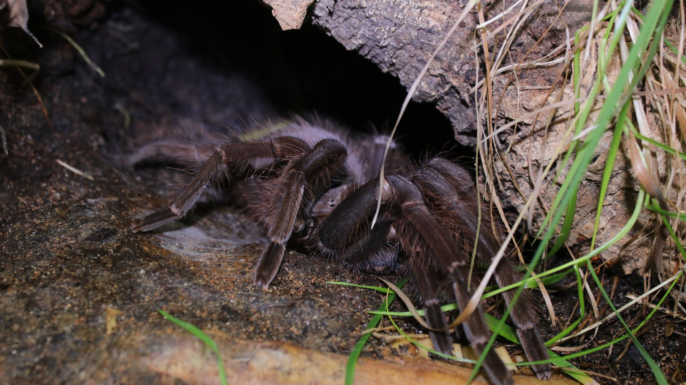

Reduced appetite can be normal.
Many spiders stop feeding, become less active, darken, or remain in a retreat before a molt. A spider lying on its back during ecdysis is usually in a normal molting position—not necessarily dying.
Spider health & husbandry
Spiders often show subtle signs, and the same sign can have several causes. This guide helps keepers separate normal events from possible problems, record useful evidence, and recognise when an experienced exotic-animal veterinarian is needed.

Patterns to recognise
Context matters: species, life stage, recent feeding, time since the last molt, enclosure conditions, and the speed of change can all alter what a sign means.
Many spiders stop feeding, become less active, darken, or remain in a retreat before a molt. A spider lying on its back during ecdysis is usually in a normal molting position—not necessarily dying.
Failure to progress, entrapment in the old cuticle, or collapse during ecdysis may indicate dysecdysis. Avoid handling or pulling at the soft animal and seek experienced help promptly.
Visible fluid loss, a wound, a markedly collapsed abdomen, or sudden inability to stand warrants urgent attention. Large terrestrial tarantulas can be vulnerable to abdominal injury after a fall.
A shrunken abdomen, unusual posture, weakness, or poor coordination may occur with dehydration, but can also accompany other problems. Check environmental records and safe water access while arranging qualified advice.
Free-living enclosure mites may be harmless, while heavy clustering on the animal or unusual material around the mouth deserves investigation. Oral nematode infections have been documented in captive tarantulas and can spread between animals.
Abnormal patches, lesions, persistent visible growth on the animal, or deterioration alongside enclosure mold should not be treated with household fungicides. Improve documentation and consult an experienced veterinarian.
Tremors, repeated uncoordinated movement, loss of righting ability, or abnormal posture can have multiple causes. Record the behaviour on video and avoid attaching a confident internet diagnosis to an unexplained sign.

Prepare a useful record
Bring the clearest picture of the case you can. Record the species, approximate age or life stage, confirmed sex if known, symptom timeline, recent molts and feeds, enclosure temperature and moisture conditions, water access, recent changes, and clear photographs or video. Keepers can use the Introvertebrates Codex for personal records while sharing only what is relevant and privacy-safe.
Clinical context
Veterinary knowledge about theraphosids is still developing. These references support the distinctions and cautions above; they do not make remote diagnosis possible.